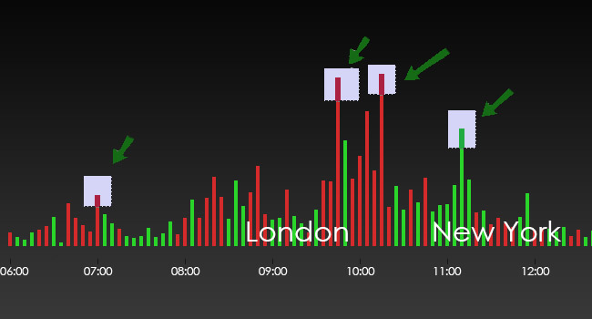
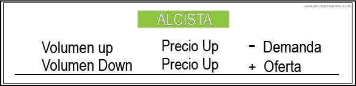
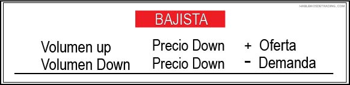
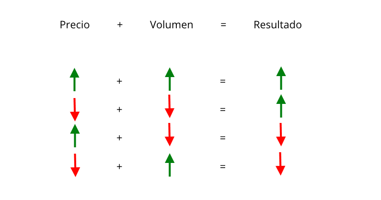
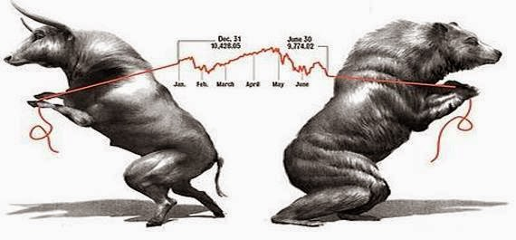
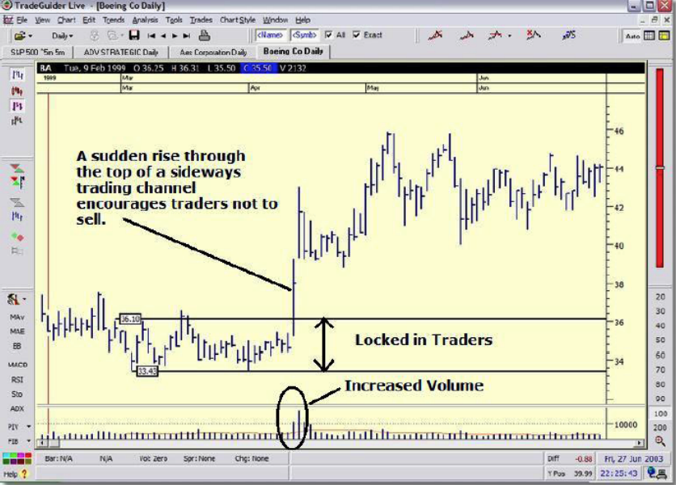

EL TRADING Y LOS MERCADOS.
Los mercados son complejos, tanto que puede sugerirnos que se mueven de forma aleatoria. Realmente,
hay una apariencia de aleatoriedad en el aspecto de los gráficos, con independencia de que estemos observando acciones o materias primas. Sin embargo aquellos que describen los mercados como aleatorios están usando el concepto de forma inadecuada, y lo que realmente quieren decir es que el mercado tiene un comportamiento caótico. Pero caótico no es sinónimo de aleatorio. En un sistema caótico pueden darse cientos, incluso miles, de variables influyendo unas en las otras. Un sistema caótico puede parecer impredecible, pero la tecnología informática está empezando a poner orden allí donde antes solo apreciábamos aleatoriedad. Sin duda, es posible predecir el movimiento de los mercados financieros. Hay un enorme abismo entre la impredicibilidad y la aleatoriedad.
Aunque tengamos alguna idea sobre las causas y efectos de los movimientos del mercado, indudable y frecuentemente nos sentiremos frustrados en nuestra operativa. ¿Porque nuestro indicador técnico favorito, que ha estado funcionando perfectamente durante meses, de repente deja de funcionar? ¿Por qué nuestro detallado y perfecto análisis fundamental de una determinada acción falla al predecir la caída del precio justo después de haber comprado acciones de dicha compañía?El mercado de acciones parece confuso y complicado, sin embargo está basado en la lógica. Como cualquier otro mercado libre, los precios de los mercados financieros están controlados por la oferta y la demanda (esto no es un gran secreto) Sin embargo, las leyes de la oferta y la demanda, tal y como se observa en los mercados, no se comportan como nosotros esperamos que lo hagan. Para ser un operador efectivo, necesitamos fundamentalmente conocer como la oferta y la demanda deben ser interpretadas bajo las diferentes condiciones del mercado, y como podemos sacar beneficio de este conocimiento. Esta guia puede ayudarle a ello. Siga leyendo.
LAS MANOS FUERTES.
Generalmente son aquellos traders que no se permiten a sí mismos quedarse atrapados en una pobre operación. Están cómodos con su posición y no serán sacudidos del mercado por movimientos repentinos. Están operando en el lado correcto del mercado. Su capital generalmente es grande y normalmente pueden leer el mercado con alto grado de competencia.
Además de su rentabilidad, asumirán alguna pérdida eventual, pero ésta será mínima ya que han aprendido a cerrar las operaciones perdedoras rápidamente. Pueden incluso tener más operaciones perdedoras que ganadoras y aun así seguir siendo rentables.
Existen dos tipos de manos fuertes:
LOS PROFESIONALES DEL MERCADO.
Todos los profesionales de cualquier negocio necesitan hacer dineromediante la diferencia de precios.
Es importante saber que un profesional no es un gestor de fondos. Dehecho, los fondos tienen pobres rendimientos y les es muy difícil obtenerbeneficios a menos que haya un mercado alcista. Estos gestores no vivende sus talentos de trading sino que recibe un salario por parte de la compañía para la que trabaja.
Un ejemplo de profesionales son los sindicatos privados de traders que trabajan de forma coordinada para acumular (comprar) o distribuir (vender) grandes cantidades del activo para sacar enormes beneficios.
LOS CREADORES DE MERCADO.
Es importante entender que los creadores de mercado (Market Makers) no controlan el mercado. Ellos responden a las condiciones del mercado y toman ventaja de las oportunidades que se les presenta; pero sólo pueden hacerlo si el mercado se lo permite.
Ningún trader individual u organización puede controlar el mercado durante un período sustancial de tiempo.
Los creadores de mercado conocen las órdenes de los sindicatos de traders y de otros operadores profesionales y por lo tanto tomarán cualquier oportunidad disponible en su beneficio.
LAS MANOS DEBILES.
muchos operadores novatos pueden fácilmente convertirse en manos débiles, pues normalmente están infra-capitalizados y no pueden soportar las pérdidas, especialmente si la mayoría de su capital puede desaparecer rápidamente, lo cual se traduce también en un indudable problema de toma de decisiones en base a las emociones. Normalmente se encuentran en la fase de aprendizaje y tienen tendencia a ejecutar sus operaciones por instinto. Las manos débiles son aquellos operadores que han permitido ser atrapados cuando el mercado se ha movido en su contra, y están rezando y suplicando para que el precio se gire y vuelva rápidamente al nivel de precios al que entraron. Estos operadores son susceptibles de ser sacados del mercado con movimientos rápidos y súbitos del precio producidos por las buenas o malas noticias. Generalmente, sienten que están en el lado incorrecto del mercado, y están inmediatamente bajo presión si los precios se giran contra ellos.
Las manos debeiles, probablemente seamos tu y yo. (por ahora).
EL VOLUMEN.
“El volumen es el más importante indicador para los operadores profesionales”
Debemos preguntarnos porque los miembros de las autorreguladas bolsas de valores de todo el mundo procuran alejar del común de los mortales la información sobre el volumen. La razón es porque saben la importancia que este dato tiene en su trading y en el análisis del mercado.
El significado e importancia del volumen es completamente desconocido por la mayoría de los operadores no profesionales. La razón puede ser porque hay muy poca información sobre el tema a su alcance y, sobretodo, muy poca enseñanza y educación sobre esta parte vital del análisis técnico. Analizar un gráfico sin el dato del volumen es como que te den un coche sin depósito de gasolina.
Cuando el volumen es tenido en cuenta en algún tipo de análisis técnico, normalmente es visto aisladamente, o promediado durante un determinado periodo de tiempo. Sin embargo, el análisis del volumen o del precio desde ese punto de vista, es algo que no puede reducirse a una simple fórmula matemática. Esta es una de las razones por las que hay muchos indicadores técnicos distintos, unos que funcionan mejor con mercados cíclicos, otros mejores para mercados volátiles, y otros que funcionan en mercados en tendencia.
Algunos indicadores técnicos tratan de relacionar el volumen con el movimiento del precio. Esa es la dirección correcta, pero les puedo asegurar que estos indicadores también tienen sus limitaciones, porque el mercado puede subir tanto con volumen alto como con volumen bajo, y viceversa, bajar con volumen bajo y con volumen alto. Evidentemente hay otros factores en juego.
Mitos sobre el volumen
Hay algunos mitos populares sobre el mercado de acciones que aparecen muchas veces en revistas y periódicos, muchos de los cuales son intencionadamente engañosos. Dos de los más comunes son los siguientes:
- Para cada vendedor ha de haber un comprador.
- Lo único que necesitamos para crear un mercado son dos operadores dispuestos a cerrar un contrato a un determinado precio
Ciertamente, podemos estar comprando y alguien nos está vendiendo. Pero seguramente estarás comprando una pequeña parte de un gran bloque de órdenes de venta que estaban anotadas en los libros de los creadores de mercado y profesionales mucho antes de que ni tan siquiera pensáramos en comprar dichas acciones. Esas órdenes de venta son acciones esperando para ser distribuidas a cierto nivel de precios y no más abajo. El mercado deberá ser soportado hasta que se hayan ejecutado todas las órdenes de venta que tienen anotadas los profesionales en sus libros, de forma que finalmente, una sola venta podrá producir la debilidad del mercado o incluso darle la vuelta hacia un mercado bajista.
En importantes puntos del mercado la verdad es que, por cada acción que compramos puede haber cientos de acciones para vender a ese mismo precio o a un precio muy cercano a él, aguardando a ser distribuidas.
Así pues el mercado no actúa como una balanza bien calibrada, a la que cuando le quitas o pones peso en uno de sus platillos uno baja y el otro sube proporcionadamente y viceversa, cuando vuelves a añadir o quitar peso del otro platillo se reequilibra. No es algo tan simple y razonable.
El volumen es actividad y siempre que lo veamos debemos preguntarnos a nosotros mismos ¿Por qué el dinero profesional está activo en este momento?
La idea básica del volumen

El volumen mide el nivel de actividad en un mercado: Por eso, un volumen alto representa mucha actividad, lo que se asocia a mucho interés por el valor en cuestión.
Pero el volumen absoluto (el número) normalmente es un dato irrelevante.
El volumen y el precio
El volumen no es difícil de entender una vez que se han comprendido los principios básicos de la oferta y la demanda. Para ello debemos relacionar el volumen con el movimiento del precio. El volumen es el suministrador de energía del mercado. Si empezamos a entender el volumen empezaremos a operar en base a hechos (no en base a noticias).
Decir que el mercado sube cuando hay más compradores (demanda) que vendedores (oferta) y viceversa, que baja cuando hay más vendedores (oferta) que compradores (demanda) parece algo obvio. Sin embargo, para entender correctamente esta obviedad hay que analizar profundamente los principios involucrados.
Para entender correctamente lo que el volumen nos está diciendo debemos preguntarnos ¿qué está haciendo el precio con este volumen?
El rango del precio es la diferencia entre el máximo y el mínimo durante el marco temporal que estés observando. El volumen muestra la actividad de trading durante ese tiempo específico.
El volumen debería ser visto en términos relativos y por lo tanto, compararlo con el volumen de los días previos; de esta manera sabrás si se trata de un volumen relativamente alto, medio o bajo.
Al comparar la información del volumen con el rango del precio podrás identificar la intencionalidad real de los profesionales (alcistas o bajistas).
Para entender el volumen tienes que pensar en términos de resultados.
Formula alcista del mercado

Si el volumen sube, y el precio sube, es porque hay aumento de demanda. Si el volumen baja, y el precio sube, es porque hay ausencia de oferta.
Formula bajista del mercado

Si el volumen sube, y el baja baja, es porque hay aumento de oferta. Si el volumen baja, y el baja baja, es porque hay ausencia de demanda.
LOS TIPOS DE VOLUMEN
Hay sólo dos definiciones básicas del volumen alcista y bajista:
- Volumen alcista es un incremento del volumen en las subidas del precio y volumen decreciente en las bajadas del precio.
- Volumen bajista es un incremento del volumen en las bajadas, y volumen decreciente en las subidas.
Para leer de forma exitosa el mercado debes observar el contexto en general, no concentrarte sobre barras individuales.
Por ejemplo, una vez que el mercado ha terminado de distribuir, el dinero inteligente querrá atraparte haciéndote creer que el mercado se va al alza. Por lo que, cerca del final de la fase de distribución, aunque no siempre, verás Upthrust o barras alcistas con bajo volumen. Estas señales por sí solas significan poco; pero dentro de este contexto de debilidad son señales muy significantes de debilidad y un sitio perfecto para iniciar una posición en corto.
Cualquier acción actual no puede alterar la fortaleza o debilidad que exista en el contexto de fondo. Las acciones de hoy están fuertemente influenciadas por la fortaleza o debilidad del contexto reciente, por encima de lo que en realidad esté sucediendo hoy (por eso las noticias no tienen efecto a largo plazo).
Notas:
Barras bajistas: Si los precios están cayendo con un volumen menor que en las dos barras previas, especialmente si el rango es estrecho, con el cierre en el medio o en máximos indica que no hay presión vendedora.
Barras alcistas: La debilidad se manifiesta sobra barras alcistas, especialmente cuando el rango es estrecho con menos volumen que las dos barras previas. Esto muestra que no hay demanda de los traders profesionales.
Formula de precio y volumen

La formula de multiplicacion de los signos matematicos es la misma para el volumen
Ciclos del mercado
Los operadores profesionales sindicados son especialmente buenos en determinar que acciones vale la pena
comprar y cuales vale más dejar de lado. Cuando deciden comprar una acción, no se arriesgan a los posibles
problemas o reveses que pueda ocasionarles el azar. Primero planean y luego ejecutan con precisión militar,
una campaña coordinada para adquirir las acciones (lo cual se denomina habitualmente acumulación).
ACUMULACION: Acumular significa comprar tantas acciones como sea posible sin que el precio suba significativamente en contra de sus propias intenciones de compra, hasta que tengan suficientes o no queden acciones para vender a ese nivel de precios.
Para los trader profesionales, los precios bajos ahora les parecen atractivos. Pero no todas las acciones pueden ser acumuladas al mismo tiempo:
- Muchas acciones están en manos de otros inversores a largo plazo.
- Los bancos retienen acciones pignoradas para garantizar préstamos.
- Los directivos de las compañías retienen acciones por diversos motivos.
Una vez que la mayoría de las acciones han sido compradas de las manos de otros operadores (normalmente no profesionales), hay muy pocas o prácticamente ninguna acción en el mercado para vender en un mercado dirigido al alza (que de existir harían caer el precio). En este punto la “masa crítica”, la resistencia a precios más altos, ha sido eliminada del mercado. Una vez que el movimiento alcista comience, continuará sin resistencia, pues la oferta ha sido eliminada.
DISTRIBUCION: En un potencial techo de un mercado alcista, muchos traders profesionales estarán buscando vender lo que compraron a precios más altos para obtener su beneficio. La mayoría de esos traders colocarán grandes órdenes de venta, no en el precio actual disponible sino en un rango de precios específico.
Cualquier venta tiene que ser absorbida por los creadores de mercado, ya que están obligados a “crear mercado”. Algunas órdenes de venta serán rellenadas inmediatamente y algunas se colocarán en los libros de los creadores de mercado. Este proceso es conocido como distribución y generalmente toma tiempo en completarse.
En las primeras etapas de la distribución, si la venta es tan grande que los precios son forzados a la baja, la venta parará y el pecio será soportado, lo cual le da al creador de mercado y a otros traders la oportunidad de vender más sobre el siguiente movimiento alcista.
Una vez que el profesional ha vendido la mayoría de su almacén, comienza el mercado bajista, ya que los mercados tienden a caer sin el apoyo del profesional.
OFERTA Y DEMANDA.
Podemos sacar un gran provecho observando a los operadores profesionales del mercado.
Si observamos a un verdadero operador profesional, que no esté en el parqué, podrá parecernos que está mirando una pantalla de operaciones, o un gráfico online en su pantalla de ordenador, y que a primera vista, sus recursos no son distintos de los de cualquier otro operador. Sin embargo, la información que el ve en su pantalla nosotros no tenemos el privilegio de verla. Saben donde están todos los stops. Saben donde están los operadores que van largos, y donde los que van cortos Además tienen unos costes de negociación bajísimos comparados con los particulares. Tienen una enorme disponibilidad de capital para operar. Están bien entrenados y tienen práctica en el arte del trading y del money management.
¿Qué es lo que ven? ¿Cómo se las arreglan para tener una buena posición cuando, al mismo tiempo que tu estás en el mercado, los precios siempre parecen ir en contra de tus intereses? ¿Cómo puede un operador saber cuando el mercado se va a mover al alza o a la baja? Bueno, ellos entienden el mercado y utilizan su conocimiento del volumen y el precio como su señal primaria para entrar o salir del mercado.
Lo primero a lo que atienden es el estado de la oferta y la demanda de aquellas acciones o valores en los que están interesados. Hacen un análisis del volumen, el movimiento del precio y los rangos del precio.
Aprender que preguntas realizar y como obtener las respuestas requiere que demos una mirada más profunda al mercado. El mercado de acciones empieza a ser más interesante si tenemos alguna idea de lo que esta pasando y lo que causa que suba o baje. Un mundo completamente nuevo y excitante se abrirá ante nosotros.
Los programas de trading que utilizan los operadores no profesionales en sus ordenadores normalmente incluyen muchas herramientas e indicadores. Pueden aprender como utilizar indicadores muy populares como el RSI y Estocásticos, que son formulas matemáticas basadas en el estudio histórico del precio. Algunos programas incluyen más de 100 indicadores y otras herramientas que miden ciclos, ángulos o retrocesos.
Incluso hay software que analiza los efectos de las mareas, y las influencias astrológicas, planetarias o galácticas. Para muchos operadores, estos métodos tienen un lugar en sus decisiones de operativa, porque están familiarizados con su uso. Sin embargo, puede convertirse en un negocio muy frustrante estar fuera del mercado observando estas herramientas y tratando de decidir si el mercado parece que va a subir o a bajar. El hecho es que estas herramientas nunca nos dicen porque el precio sube o baja.
La gente, por muy disciplinada que sea, está extremadamente abierta a la sugestión. Los amigos te pueden dar consejos, escuchan nuevas historias, buscan rumores en internet y en los chatrooms y foros, o se suscriben a información secreta obtenida de fuentes desconocidas.
Los profesionales, evidentemente, no hacen ningún caso de estas cosas, simplemente porque no tienen tiempo. Están luchando contra otros profesionales y tienen que actuar rápidamente ante los cambios de la situación del mercado antes que sea demasiado tarde y otros profesionales se les adelante. La única forma de actuar así es entendiendo, casi intuitivamente, lo que el mercado está tratando de decirles. Leen el mercado a través del volumen en relación con el movimiento del precio.
Nosotros también podemos leer el mercado de esta forma, pero necesitamos saber que es lo que realmente estamos viendo y que es lo que estamos buscando. .
COMO SABER SI EL MERCADO ESTA FUERTE O DEBIL.
Las órdenes de compra y venta de los operadores de todo el mundo son procesadas y ejecutadas por los creadores de mercado. Es su trabajo crear un mercado, y a fin de crearlo tienen grandes bloques de acciones con los que negociar. Si no tienen suficientes cantidades de acciones en sus libros para operar en el nivel de precios actual, tienen que moverse rápidamente a otro nivel de precios donde si existe oferta o demanda de esas acciones, o llamar a otros creadores de mercado para que les ayuden. Todos los creadores de mercado compiten entre si, así que su respuesta a nuestras órdenes de compra y venta ha de responder de forma realista a las condiciones del mercado.A su vez, los creadores del mercado participan también en el mercado con su propio dinero, así que su respuesta a nuestras órdenes de compra o venta han de corresponderse con las condiciones del mercado.
Si el mercado está en una tendencia alcista y nosotros colocamos una orden de compra en un mercado ascendente, pagaremos lo que a priori nos parece un buen precio.
Pero preguntémonos ¿por qué estamos recibiendo un buen precio? ¿es que le hemos caído bien a los profesionales y han decidido hacernos un favor? ¿O más bien es que los profesionales han decidido darse la vuelta y empezar a cambiar su posición de alcista a bajista porque sus libros les empiezan a mostrar grandes órdenes de venta para ejecutar? Su valor percibido del mercado es mas bajo que el nuestro porque ellos esperan (y saben) que el precio va a caer o, en el mejor de los casos, quedarse lateral.
Esta acción de vender a los no profesionales las acciones que quieren comprar porque piensan que están en un mercado alcista hace que el rango de las velas sea estrecho, ya que limitan el máximos del precio porque no tan solo te están vendiendo a ti, sino también a muchos otros compradores.
Si, por el contrario, el creador de mercado fuera alcista, porque no tienen grandes órdenes de venta en sus libros que ejecutar, puede impulsar al alza el precio de compra de forma que te venderá a lo que te parecerá un precio de compra inadecuado, demasiado alto. Esto repetido constantemente y con montones de compradores hace que las barras o velas sean amplias.
Así pues, por la simple observación del rango de la vela o barra podemos leer el sentimiento de los creadores de mercado, la opinión de aquellos que ven los dos lados del mercado.
Muchos días de debilidad, el mercado tiene un gap alcista allí donde los creadores de mercado han hecho subir el precio contra los compradores. Este gap alcista se suele producir rápidamente, normalmente al inicio de la sesión diaria y puede tener un impacto emocional muy fuerte. Esta acción normalmente está diseñada para tratar de absorbernos en un mercado potencialmente débil, con un posición pobre, cazar stops de pérdidas o causar el pánico de los operadores en general.
Podemos observar tipos similares de gaps alcista en mercados fuertes también, pero en este segundo caso tendremos una antigua área de trading lateral a nuestra izquierda. Los operadores que han sido atrapados en el canal lateral (normalmente denominado rango de trading), han comprado en los máximos y esperan una subida, o comprado en los mínimos y no ven ninguna subida significativa del precio, y empiezan a estar desmoralizados por la falta de beneficios.
Estos operadores atrapados solo quieren una cosa: salir del mercado a un precio similar a aquel que han entrado. Los operadores profesionales que están alcistas lo saben. Para animar a estos operadores atrapados a no vender, los operadores profesionales dirigen el mercado al alza, o producen un salto del mercado, atravesando la potencial zona de resistencia lo más rápidamente posible.
En el gráfico de la derecha podemos ver que los precios son rápidamente dirigidos al alza por los operadores profesionales, cuya visión del mercado en ese momento es alcista. Sabemos esto porque el volumen se ha incrementado sustancialmente apoyando el movimiento. Esta subida no puede ser una trampa alcista porque el volumen está soportando el movimiento. Las amplias barras alcistas están diseñadas para dejarnos fuera del mercado más que para intentar atraernos a él. Tienen como finalidad dejarnos fuera de la compra, pues va contra la naturaleza humana comprar algo que antes podías haber obtenido a un precio mucho más bajo. Además se crea pánico en los operadores que están cortos en el mercado desde el último mínimo, normalmente animados por las malas noticias que se difunden en la prensa en los mínimos del mercado o cerca de ellos. Estos operadores tenderán a cubrir sus posiciones cortas comprando, agregándose así a la demanda.
Observemos que el gráfico muestra un sustancial y saludable incremento de volumen. Se trata de volumen alcista. Sin embargo, un volumen excesivo nunca es buena señal; indica que hay oferta en el mercado, la cual puede llegar a sustituir a la demanda. Sin embargo, un volumen bajo en una situación así nos debe alertar de una posible trampa alcista (pues es indicativo de la falta de demanda en el mercado).
Si tomamos el rápido movimiento alcista de forma aislada, siempre nos parecerá que el mercado está saliendo al alza. Pero lo que nos dará la clave es el rango de trading lateral a nuestra izquierda, pues ahora sabemos porqué está saliendo el precio hacia arriba tan rápidamente. Además advirtamos que una barra bajistas con muy poco volumen, después de que los precios hayan hecho un rally y roto la resistencia que queda a la izquierda es indicativo de fortaleza y precios más altos. A esta barra se le denomina un “Test.
Los creadores de mercado y especialistas basan sus ofertas y demandas en información privilegiada que no podemos ver nosotros. Conocen los grandes bloques de ventas o compras anotados en sus libros, a que nivel de precios deben ejecutar, y cual es el flujo del mercado. Además negocian con sus propias cuentas. Sería ingenuo pensar que no son capaces de hacer subir o bajar el mercado temporalmente si la oportunidad se les presenta, negociando en los mercados de opciones o futuros al mismo tiempo. Fácilmente pueden lanzar el mercado hacia arriba o hacia abajo con buenas o malas noticias o cualquier otra excusa. No están bajo la severa presión que amenaza al resto de operadores, porque están en sintonía con la imagen real del mercado y en gran parte son ellos mismos los que están dirigiendo toda la manipulación. La buena noticia es que muchas veces podemos ver claramente qué están haciendo, y sacar ventaja de prestamos suficiente atención.
¿Por qué juegan con los precios de esta forma? Porque quieren atrapar tantos operadores como sea posible en posiciones débiles. Esto es un bonus extra para ellos que incluye atrapar los stops de pérdidas de la zona.
Debido al enorme volumen de compras y ventas que provocan los profesionales en sus operaciones, nosotros podemos interpretar correctamente quien está detrás de los movimientos del mercado analizando comparativamente el volumen en relación con el rango de los movimientos del precio. Este hecho nos indica que hay profesionales trabajando en el mercado. Los profesionales, por su propia naturaleza, no tienen ni el más mínimo interés en nuestro bienestar financiero. De hecho son depredadores intentando cazar nuestros stops de pérdidas y engañándonos para que hagamos las peores operaciones de trading posibles
Fortaleza del mercado

Movimiento profesional

COMO IDENTIFICAR COMPRA Y VENTA.
Para que un mercado se mueva al alza necesitamos que se produzcan compras, lo cual generalmente lo vemos como una barra alcista. (P.ej. la barra actual cierra más arriba que la barra precedente). El monto de volumen que acompaña a la barra alcista debe incrementarse. Sin embargo, este incremento de volumen no debe ser excesivo, pues esto sería indicativo de oferta en el fondo del mercado que está sustituyendo a la demanda.Si observamos que el volumen es bajo y el mercado se mueve alcista, sabremos que nos están ofreciendo una imagen falsa. Este bajo volumen tiene su causa en que el dinero profesional está rehusando participar en el movimiento alcista, normalmente porque saben que el mercado está débil. El mercado puede moverse alcista, pero sin la participación de los operadores que interesan. Mientras el dinero profesional no esté interesado en el movimiento, ciertamente no ira muy lejos esa subida.
Durante un mercado bajista, podremos ver frecuentemente movimiento alcistas temporales. La razón de estos movimientos alcistas no nos importa ahora, pero sabremos que el mercado sigue bajista porque el volumen no acompañará a estas subidas que se producirán con un volumen bajo. Esto solo puede ocurrir porque los profesionales no están interesados en precios más altos y no están participando, de ahí el bajo volumen. Los profesionales están bajistas y no tienen intención de comprar en un mercado débil simplemente porque parece estar subiendo. Si esta acción la vemos con un rango de trading a nuestra izquierda, al mismo nivel de precios, se convierte en una señal muy potente de que van a venir precios más bajos.
Lo contrario también es verdad para los movimientos bajistas. Así, para que tengamos un auténtico movimiento bajista necesitamos una verdadera evidencia de venta, que se revelará con un incremento de volumen en las velas bajistas (p.ej. la barra actual cierra más bajos que la barra precedente). Si vemos un incremento de volumen excesivo, entonces debemos estar alerta pues puede indicar que la demanda está detrás.
Si observamos que el volumen va disminuyendo en las sucesivas velas bajistas, esto es evidencia de que la presión vendedora total está disminuyendo. El mercado podrá seguir cayendo, pero cuidado porque rápidamente puede girarse y subir temporalmente, dada la falta de oferta. Un monto de volumen decreciente en cualquier barra bajista indica que no hay interés profesional en el lado bajista.
COMO IDENTIFICAR LA FALTA DE DEMANDA.
La falta de demanda es uno de los más comunes indicadores que podemos ver y es facil de detectar.Básicamente, deberemos ver una barra alcista con bajo volumen, como algunas de las que vemos en el gráfico siguiente.
Si, durante las próximas barras, el precio cierra por debajo, con volumen en declive, con rangos estrechos del precio, todo esto indicará que no hay presión vendedora. En ese caso, podremos observar una debilidad temporal en el mercado, el movimiento alcista no puede continuar.
Cuando leamos un gráfico, debemos tratar de mantener en mente que muchas personas fallan al relacionar el comportamiento humano (en este caso de los operadores profesionales) con el rango del precio y el volumen, pero luego se creerán la enorme cantidad de noticias que les llegan, que inevitablemente difieren de aquello que nos está diciendo realmente la oferta y la demanda.
Es la falta de demanda del dinero profesional lo que causa que los mercados se giren en los máximos, dando como resultado la característica figura de cabeza de champiñón. No nos daremos cuenta de esta debilidad porque las buenas noticias que se estarán difundiendo nos confundirán.
El gráfico de la derecha nos muestra un mercado en el que está totalmente ausente la demanda profesional. Todas las barras marcadas con una X nos muestras rangos estrechos que cierran más alto que las anteriores, con bajo volumen. No hay ninguna forma de que este mercado pueda subir en un rally u atravesar la antigua zona de resistencia superando el anterior máximo del mercado con esta falta de demanda.
No debemos ver la falta de demanda de forma aislada, debemos tratar de tener una visión holística cuando leemos el mercado. Debemos siempre intentar ver lo que hay detrás de los gráficos, el fondo del mercado. ¿Qué es lo que las barras previas nos están diciendo?.
Por ahora, recordemos que necesitamos confirmación antes de entrar cortos en el mercado tras alguna señal de no demanda. Hay muchas indicadores de confirmación, pero es suficiente saber que esta confirmación muchas veces aparece como una vela alcista de rango estrecho con un gran incremento de volumen. En ese punto, los operadores profesionales han empezado a transferir las acciones a algunos desinformados o engañados compradores. Los precios son llevados al alza para incitar a la compra, pero tengamos en cuenta lo estrechos que son los rangos. Estos operadores son completamente ignorantes de las implicaciones del volumen y probablemente estén comprando en base a las reiteradas buenas noticias que ven en los medios.
EL TEST DE OFERTA
El test es de lejos la más importante de la señales de compra con volumen bajo. Como vamos a referirnos a él muchas veces en el futuro vale la pena hacer una digresión y estudiarlo más a fondo.Que es un test y porque tiene tanta importancia esta acción del mercado.
Un operador con mucha fuerza que ha acumulado un importante número de acciones de un mercado puede empujar los precios abajo con gran confianza, pero no puede subirlos sin perder dinero cuando otros operadores están vendiendo en el mismo nivel de precios. El intento de subir el precio en un mercado vendedor es muy mal negocio, tan malo que te puede llevar a la bancarrota si insistes.
El peligro de un operador que está alcista es que la oferta entre en su mercado, porque en cualquier rally la oferta vendiendo en el otro lado del mercado actuará como resistencia. Los profesionales alcistas deberán absorber todas las ventas si quieren que el precio finalmente suba. Si se ven forzados a absorber las ventas en grandes cantidades, la venta puede ser tan grande que los precios empiecen a bajar. Serán forzados a comprar acciones a un nivel inaceptablemente alto para ellos y perderán dinero si el mercado finalmente cae.
Los rallys en cualquier índice tienen normalmente corta duración una vez que aparece la oferta en el fondo del mercado (las ventas deben aparecer en una barra alcista). Los profesionales saben que dándole suficiente tiempo (con malas noticias, movimientos bajistas persistentes, el simple paso del tiempo sin que ocurra nada significativo) la oferta flotante se retirará del mercado, pero han de estar seguros que la oferta se ha reiterado totalmente antes de intentar subir el precio. La mejor forma para averiguarlo es dirigir rápidamente el mercado a la baja. Así les dan a los bajistas la oportunidad de asomar su patita para ver si queda oferta y la posible fuerza de la misma. La cantidad de volumen (actividad) de trading necesario para que el precio baje les dirá a los profesionales cuanta oferta queda todavía en el mercado. Un bajo volumen o una baja actividad es señal de que hay muy pocas venta en la bajada. Si además así cazan algún que otro stop, mejor que mejor, pues es una forma de comprar a más bajos precios. Un alto volumen o alta actividad nos muestra que las ventas (oferta) está apoyando todavía la bajada.
Podemos ver test con bajo volumen, pero también con volumen alto (normalmente en compañía de malas noticias). En este último caso no tan solo se cazan muchos stops sino que se sacuden de encima a unos cuantos operadores para que la subida pueda ser más fácil. Todo este proceso nos lleva finalmente a una subida del precio.
Los test son señal de fortaleza. Generalmente un test exitoso con bajo volumen nos está diciendo que el mercado está preparado para un nuevo rally alcista inmediato. Si tenemos un volumen alto en el test el mercado nos estará diciendo: “si quiero hacer una nueva subida pero los compradores deben ser muy cautelosos, todavía no estoy listo” y seguramente se producirá un re-testeo más adelante. Esto muchas veces se traduce en un gráfico con forma de W, conocido como doble suelo o “rebote del gato muerto”. La W es el resultado de la acción del retesteo en el área en la que todavía había mucha oferta en el primer test.
El gráfico de la derecha nos muestra un test exitoso.
Cualquier movimiento bajista que profundice en una zona previa de venta (un nivel de volumen alto) que luego cierra en los máximos, o cerca de ellos, con volumen bajo, es una clara y potente señal para esperar precios más altos inmediatamente. Es un test exitoso. El bajo volumen nos muestra que la actividad en la bajada es poca, pues ahora hay poca venta, cuando antes allí se había vendido y mucho. Es importante vera hora, por su propios actos, como los creadores del mercado y especialistas responden a la aparente fuerza vista en cualquier test con volumen bajo.
Si nos encontramos en un mercado bajista o débil, podremos ver de vez en cuando algo que parece un test (un test en un mercado débil) sin embargo el mercado no responderá como lo hace normalmente con una indicación de fortaleza. Esto pone de manifiesto mayor debilidad aun. Los especialistas o los creadores del mercado nunca lucharán contra el mercado. Si desde su punto de vista el mercado está débil se retirarán del mercado. El mercado será entonces reluctante a subir, incluso si parece que va a subir porque hay poca o ninguna venta en los falsos test que se producen.
Cualquier test que no responde inmediatamente con precios más altos, o al siguiente día (en caso de velas diarias) se convierte así en una indicación de debilidad. Si fuera un auténtico signo de fortaleza, los especialistas o los creadores del mercado responderían favorablemente y el mercado subiría.
ROMPIENDO RESISTENCIAS
Los antiguos rangos de trading (zonas laterales) forman áreas de resistencias, porque son niveles conocidos de oferta. El comportamiento humano nunca cambia, el comportamiento del rebaño está bien documentado.De los operadores que han estado comprando hasta llegar a la zona de resistencia, muchos están todavía dentro del mercado y se encuentran atrapados por el movimiento bajista. Lo que más desean es cerrar sus posiciones y recuperar lo máximo posible, a ser posible sin pérdidas. Por ello representan posible oferta (resistencia) al mercado.
Los creadores de mercado conocen perfectamente donde están las áreas de resistencia. Si están alcistas y han previsto precios más altos, sin ninguna duda querrán que se forme un rally. El problema será como evitar verse forzados a comprar las acciones de los operadores atrapados en la zona de resistencia. Estas zonas de oferta pueden compararse con los peajes que nos encontramos en muchas autopistas. Nuestro avance se ve constantemente frenado y obstaculizado cuando llegamos a la barrera del peaje. En los mercados de valores, los precios más altos son frecuentemente bloqueados por una variedad de operadores con malas posiciones abiertas y que quieren vender. Si los especialistas del mercado están esperando precios más altos deben pagar el peaje de absorber las ventas de esos operadores, aunque intentarán por todos los medios a su alcance evitarlo.
¿Cómo lo hacen? Una rápida vela de rango amplio, o un gap, que atraviesa la zona de oferta tan rápido como les es posible es el método más fiable. Para nosotros, esto será una señal de fortaleza. Los especialistas no quieren tener que comprar las acciones a precios altos. De hecho, han comprado la mayoría de sus acciones a precios bajos o muy bajos.
Los operadores que estaban atrapados y afectados de potenciales pérdidas de repente se encuentran que tiene beneficios y caen en la tentación de no vender, pues el estrés de las anteriores pérdidas ahora se convierte en júbilo. Estos operadores que permitieron ser atrapados en la primera zona, seguramente volverán a quedar atrapados de nuevo a niveles más altos.
Todo esto es una maniobra de los especialistas y creadores del mercado para limitar el número de acciones que deberán comprar para despejar la zona y tener vía libre para que el rally alcista pueda producirse, evitando pagar los peajes. El ejemplo del anterior gráfico es en un gráfico diario, pero podemos ver en cualquier marco temporal.
Las barras deben ser amplias y alcistas, con un posible gap o un salto alcista que atraviese la antigua zona de resistencia que quedará a nuestra izquierda. Estos patrones los podemos ver en gráficos de cualquier dimensión (aunque contra más pequeña sea la dimensión con más frecuencia los veremos).
Si observamos volumen alto acompañado de barras de rango amplio alcistas, nos muestra que el dinero profesional esta preparado para absorber cualquier venta de los operadores atrapados que han decidido vender. Esto es conocido como volumen de absorción. En esta situación, los creadores de mercado han anticipado precios más altos y están alcistas. Saben que una ruptura de una antigua zona de trading puede crear una nueva oleada de compras. Además, aquellos operadores que estén cortos se verán forzados a cerrar sus pobre posiciones comprando. Es más, operadores que estaban atrapados, ahora querrán comprar. Finalmente, todos aquellos traders que no estaban dentro del mercado sentirán que se están perdiendo una oportunidad y se animarán a comprar también. Todo esto se sumará a la posición alcista de los profesionales. Si vemos cualquier test en velas bajistas con bajo volumen después de algo así, tendremos una fuerte señal de compra.
Veamos otro ejemplo de empujón alcista:
En el punto (a) notemos el bajo volumen que se registra (nadie está vendiendo) y el estrecho rango de la barra bajista (no hay venta pues en caso contrario la barra se alargaría hacia abajo), todo lo cual nos da una poderosa señal de fortaleza.
En el punto (b) tenemos una barra alcista de rango amplio que cierra en los máximos y atraviesa la zona de resistencia que se había instalado a la izquierda con un volumen muy alto. Si el salto de la zona de resistencia se hubiera realizado con el volumen bajo, estaríamos ante una trampa alcista. Esta acción por si sola nos dice muy poco, pero en cuanto vemos que se ha atravesado una zona de resistencia podemos prever porque esta ocurriendo esto.
En el punto (c) vemos la confirmación de que vamos a ver muy pronto precios mucho más altos. Falta de oferta después de haberse producido la ruptura de la resistencia. El mercado trabaja con la oferta y la demanda, si no hay oferta el mercado sube.

ROMPIENDO RESISTENCIAS
Los antiguos rangos de trading (zonas laterales) forman áreas de resistencias, porque son niveles conocidos de oferta. El comportamiento humano nunca cambia, el comportamiento del rebaño está bien documentado.De los operadores que han estado comprando hasta llegar a la zona de resistencia, muchos están todavía dentro del mercado y se encuentran atrapados por el movimiento bajista. Lo que más desean es cerrar sus posiciones y recuperar lo máximo posible, a ser posible sin pérdidas. Por ello representan posible oferta (resistencia) al mercado.
Los creadores de mercado conocen perfectamente donde están las áreas de resistencia. Si están alcistas y han previsto precios más altos, sin ninguna duda querrán que se forme un rally. El problema será como evitar verse forzados a comprar las acciones de los operadores atrapados en la zona de resistencia. Estas zonas de oferta pueden compararse con los peajes que nos encontramos en muchas autopistas. Nuestro avance se ve constantemente frenado y obstaculizado cuando llegamos a la barrera del peaje. En los mercados de valores, los precios más altos son frecuentemente bloqueados por una variedad de operadores con malas posiciones abiertas y que quieren vender. Si los especialistas del mercado están esperando precios más altos deben pagar el peaje de absorber las ventas de esos operadores, aunque intentarán por todos los medios a su alcance evitarlo.
¿Cómo lo hacen? Una rápida vela de rango amplio, o un gap, que atraviesa la zona de oferta tan rápido como les es posible es el método más fiable. Para nosotros, esto será una señal de fortaleza. Los especialistas no quieren tener que comprar las acciones a precios altos. De hecho, han comprado la mayoría de sus acciones a precios bajos o muy bajos.
Los operadores que estaban atrapados y afectados de potenciales pérdidas de repente se encuentran que tiene beneficios y caen en la tentación de no vender, pues el estrés de las anteriores pérdidas ahora se convierte en júbilo. Estos operadores que permitieron ser atrapados en la primera zona, seguramente volverán a quedar atrapados de nuevo a niveles más altos.
Todo esto es una maniobra de los especialistas y creadores del mercado para limitar el número de acciones que deberán comprar para despejar la zona y tener vía libre para que el rally alcista pueda producirse, evitando pagar los peajes. El ejemplo del anterior gráfico es en un gráfico diario, pero podemos ver en cualquier marco temporal.
Las barras deben ser amplias y alcistas, con un posible gap o un salto alcista que atraviese la antigua zona de resistencia que quedará a nuestra izquierda. Estos patrones los podemos ver en gráficos de cualquier dimensión (aunque contra más pequeña sea la dimensión con más frecuencia los veremos).
Si observamos volumen alto acompañado de barras de rango amplio alcistas, nos muestra que el dinero profesional esta preparado para absorber cualquier venta de los operadores atrapados que han decidido vender. Esto es conocido como volumen de absorción. En esta situación, los creadores de mercado han anticipado precios más altos y están alcistas. Saben que una ruptura de una antigua zona de trading puede crear una nueva oleada de compras. Además, aquellos operadores que estén cortos se verán forzados a cerrar sus pobre posiciones comprando. Es más, operadores que estaban atrapados, ahora querrán comprar. Finalmente, todos aquellos traders que no estaban dentro del mercado sentirán que se están perdiendo una oportunidad y se animarán a comprar también. Todo esto se sumará a la posición alcista de los profesionales. Si vemos cualquier test en velas bajistas con bajo volumen después de algo así, tendremos una fuerte señal de compra.
Veamos otro ejemplo de empujón alcista:
En el punto (a) notemos el bajo volumen que se registra (nadie está vendiendo) y el estrecho rango de la barra bajista (no hay venta pues en caso contrario la barra se alargaría hacia abajo), todo lo cual nos da una poderosa señal de fortaleza.
En el punto (b) tenemos una barra alcista de rango amplio que cierra en los máximos y atraviesa la zona de resistencia que se había instalado a la izquierda con un volumen muy alto. Si el salto de la zona de resistencia se hubiera realizado con el volumen bajo, estaríamos ante una trampa alcista. Esta acción por si sola nos dice muy poco, pero en cuanto vemos que se ha atravesado una zona de resistencia podemos prever porque esta ocurriendo esto.
En el punto (c) vemos la confirmación de que vamos a ver muy pronto precios mucho más altos. Falta de oferta después de haberse producido la ruptura de la resistencia. El mercado trabaja con la oferta y la demanda, si no hay oferta el mercado sube.
VOLUMEN ALTO EN LOS MAXIMOS DEL MERCADO
Muchos periódicos y medios de comunicación piensan que cuando el mercado ha llegado a máximos importantes es señal de la fortaleza del mercado y que el movimiento alcista continuará indefinidamente. Las noticias son buenas y todo el mundo es alcista. Pero esta es una peligrosa presunción.Como hemos dicho antes, el volumen alto por si solo no es suficiente. Si el mercado está realmente en un rally y el volumen alto aparece repentinamente en una barra alcista e inmediatamente el mercado comienza a moverse lateralmente o incluso cae en la siguiente barra, entonces tenemos un indicador de la posible finalización del rally. Si el volumen nos muestra un creciente esfuerzo para seguir subiendo, podemos esperar que este esfuerzo extraordinario se refleje en precios más altos. Pero si no es así, algo esta funcionando mal. Este principio se conoce como esfuerzo vs resultado, y lo analizaremos con mayor detenimiento más adelante.
Una barra alcista con volumen alto en un nuevo techo del mercado, con la barra siguiente al mismo nivel o por debajo es un indicador de debilidad. Si el volumen nos estuviera mostrando la actividad profesional ¿Por qué los precios no están subiendo? Esta situación nos revela que los compradores están en el mercado, pero debemos estar alerta porque la compra puede proceder de potenciales manos débiles que han sido atraídos por el rally cuando este ya está finalizando.